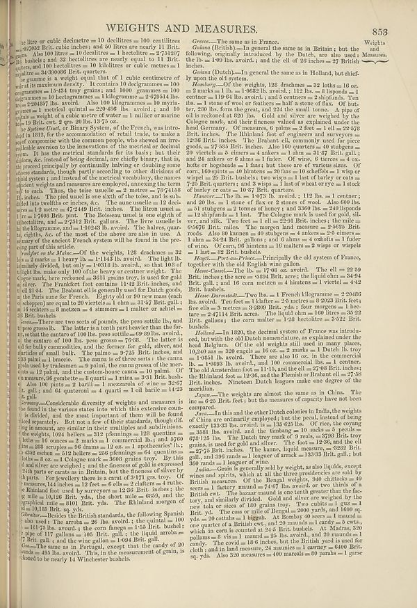

Scan ID britannica:309f765b1ecc83e0a7f7762e44b4a927a7555443:train:104
Image SHA-256 9aaa833a46437aa0cc322c1d5f37b5a4d013906d6d40bfc13ca14d19046d6f3f
Status: ok. Running header: WEIGHTS AND MEASURES. (article_title). Removed page furniture: Page-header: WEIGHTS AND MEASURES., Text: 853.
PDF · raw Parse reply · LaTeX
Entries: WEIGHTS AND MEASURES

| # | Class | Box | Parse 3.5 | Used text | Source |
|---|---|---|---|---|---|
| 2 | Text | [0.041, 0.0625, 0.4355, 0.1242] | is litre or cubic decimetre = 10 diclitres = 100 centiltes = 27/430 Brit. cubic inches, and so liere was nearly I Brit. Als. Also lo litre as 10 dec metres a 1 becollires ≈ 27/10/7 lb. bubels s and 22 becollires are nearly equal to 11 Brit; quarters, the satellites no 10 kiltser or cubic meters at 3hr 34:300698 Brit. quarters. | litre or cubic decimetre = 10 decilitres = 100 centilitres 27052 Brit. cubic inches; and 50 litres are nearly 11 Brit. Also 100 litres = 10 decalitres = 1 hectolitre = 2751207 bushels; and 32 hectolitres are nearly equal to 11 Brit. quarts, and 100 hectolitres = 10 kilolitres or cubic metres = 1 kilolitre = 34390086 Brit. quarters. | super_vl |
| 3 | Text | [0.04, 0.125, 0.4473, 0.2047] | The parents is a weight equal that of 1 cubic centimetre of war it in maximum density. It contains 10 decigmumes ± 100 organisms have lost by raw materially into grams of hexagons, a Hexagonmas e 1 klorgmases – 2479514 lbs. ez 224887 lb word). Also No Mlkgummeses 10 mayгges pas a vertical crystal 22-0-08 his word), and 10 quals a weight of cubic meter of water = 1 millier or marine lies 12 yr. on 20 hls. In 57-you. | The gramme is a weight equal that of 1 cubic centimetre of water at its maximum density. It contains 10 decigrammes = 100 centigrammes = 15.434 troy grains; and 1000 grammes = 100 decigrammes = 10 hectogrammes = 1 kilogramme = 2.679514 lbs. troy = 2.204857 lbs. avoirdupois. Also 100 kilogrammes = 10 myriagrammes = 1 metrical quintal = 220.488 lbs. avoirdupois; and 10 quintals = weight of a cubic metre of water = 1 millier or marine ton = 19 Brit. cwt. 2 qrs. 20 lbs. 13.75 oz. | super_vl |
| 4 | Text | [0.0391, 0.2039, 0.4434, 0.4109] | be System Uncle, or Binary System, of the French, was irure for all 1013. For the accommodation used that trade, to make some companies with the common people, who showed in irreceable version of the innovations from its markets for their ability. Even instead of being fetral, are clearly binary, that is he proved especially by continually linking our domain some classes standards, though partly according to other divisions of this system means that we cannot be used because they have a decent weights and measures are employed, annexing the term of one each. They, the idea sends the ones worth | The System Usuel, or Binary System, of the French, was introduced in 1812, for the accommodation of retail trade, to make a sort of compromise with the common people, who shewed an irreconcilable aversion to the innovations of the metrical or decimal system. It has the metrical standards for its basis; but their divisions, &c. instead of being decimal, are chiefly binary, that is, they proceed principally by continually halving or doubling some of those standards, though partly according to other divisions of the old system; and instead of the metrical vocabulary, the names of ancient weights | super_vl |
| 5 | Text | [0.0381, 0.4102, 0.4424, 0.568] | weight of six Mokes—Of the weights, 128 drachnes = 32 let = 2 marks a 1 bars by barely - 12114 but a novel, which avel. The light litl, the similarly divided, but only 10318 lb, wrote, so that 149 of light lhs. make only 100 of the heavy or content weight. The Copper sample was a two point gali a niv. The Frankfort foot contains 114-2 Brit inches, and of 1014. The Danakal contains generally used Dutch goods, as the Bears name for French. Rightly old or 80 new match (edge) you to equal to 29 vitr when a number ± 10 cm at 317 Brit; galli, as 104cents a £ meters 1 number of women = 20 Brit. baske | Of the weights, 128 drachmes = 32 lot = 2 marks = 1 pound = 1.1145 lb. avoirdupois. The light pound is similarly divided, but only 1.0318 lb. avoirdupois, so that 108 of the light lbs. make only 100 of the heavy or centner weight. The Cologne mark, here reckoned = 3611 grains troy, is used for gold and silver. The Frankfort foot contains 11.42 Brit. inches, and the ell 21.54. The Brabant ell is generally used for Dutch goods, as the Paris aune for French. Eighty old or 90 new mass (each schoppen) are equal to 20 viertels = 1 ohm = 31.57 Brit. gall.: 16 seeters = 8 metzen = 4 simmers = 1 malter | super_vl · expanded_beyond_parse |
| 6 | Text | [0.0371, 0.5727, 0.4414, 0.6555] | Sometimes are two sorts of pounds, piese nottile lbs, and tpes grossosibb. The latter at teeth pert here's than the far visited the central 100 ha, per section 30-929 lb, avoids, or the station of 100 lac. peso grosso = 76-88. The latter is of for bed, very small, and the former for girls, given, and articles of small bulk. The palms o al 4722 Brit. inches, and then resta the canna posed by possessions of pinit, the cumma genus of the merc-ots = 12 pat, and the national tenants ema a realmal. Of tournaments 98 matches a sport i must = 23-18 bushals. Also 100 points a 2 barliar 1 mezzarols of w | ud for bulky commodities, and the former for gold, silver, and articles of small bulk. The palmo = 9-725 Brit. inches, and 203 palmi = 1 braccio. The canna is of three sorts : the canna piccola used by tradesmen = 9 palmi, the canna grossa of the merchants = 12 palmi, and the custom-house canna = 10 palmi. Of corn measure, 96 gombette = 8 quarti = 1 mina = 3-31 Brit. bushels. Also 100 pints = 2 barili = 1 mezzarola of wine = 32-67 imp. gall. ; and 64 quateroni = 4 quarti = 1 oil barile = 14-23 imp. gall. | super_vl |
| 7 | Text | [0.0361, 0.6609, 0.4404, 0.843] | Cornay—Combine diversity of weights and measures is 10 found in the various states lines which this extensive coun- is divided, and the most important of them will be found instantly. But now a few of their students, though differing in amount, are similar in their multiples and additions. the weights, 100 percent 32 st pomings = 16oz quantities 1 moz = 16 courses = 2 marks a 1 commercial lb, j and 5700 ms, 280 wrc= 408 arms = 3 z oz., a 1 spolents ib, e, 43cz eten xon = 02 bolings a 260 omings a 64 questions - lots ał oz of ocz = 4 Colgorne mark– 2-500 grains try. By this do and allow we need | Considerable diversity of weights and measures is found in the various states into which this extensive country is divided, and the most important of them will be found noticed separately. But not a few of their standards, though differing in amount, are similar in their multiples and subdivisions. The weights, 1024 hellers = 312 pfenninge = 128 quintins = 16 ounces = 2 marks = 1 commercial lb.; and 5760 troy = 288 scruples = 96 drams = 12 oz. = 1 apothecaries' lb.; 4352 eschen = 512 hellers = 256 pfennings = 64 quintins = 8 lots = 8 oz. = 1 Cologne mark = 3608 grains troy. By this gold and si | super_vl |
| 8 | Text | [0.0518, 0.8398, 0.4395, 0.8891] | Double--Bubble the British standards, the allowing Spanish to use. The first one is 28 the corn images a 130 donuts, provided in 100 = 1017s lbs. avord. i- corn images a 13-30 br. bubels, pas= 117 godt and 117 godt and 17 godt and 200 minutes a 7 bit. gasi, and the wag allan = 1094 Brit. gain. | Besides the British standards, the following Spanish also used: The arroba = 26 lbs. avoirdupois; the quintal = 100 = 101.75 lbs. avoirdupois; the corn fanega = 1.55 Brit. bushel; pipe of 117 gallons = 105 Brit. gall.; the liquid arroba = 7 Brit. gall.; and the wine gallon = 1.094 Brit. gall. | super_vl |
| 9 | Text | [0.0527, 0.8898, 0.4385, 0.9258] | Onetime as in a Portugal except that crusty of ever ends as aSo like a word. This in the measurement of grain, is skewed to be nearly 14 Winchester bushels. | 7 Brit. gall. ; and the wine gallon = 1-094 Brit. gall. Goa.—The same as in Portugal, except that the candy of 20 sounds = 495 lbs. avoirdupois. This, in the measurement of grain, is supposed to be nearly 14 Winchester bushels. | super_vl |
| 10 | Text | [0.4521, 0.0633, 0.667, 0.0797] | Greece...The same as in France. | Greece.—The same as in France. Guiana (British).—In general the | super_vl |
| 11 | Text | [0.4512, 0.0742, 0.8643, 0.1102] | Geism (Britslu)—In general the same as in Britain’s, but the drawing, originally introduced by the Dutch, are also used the the Is = 100 lbs. avord. i and the ell of 26 inches = 27 Britths inches. | Greece.—The same as in France. Guiana (British).—In general the same as in Britain; but the following, originally introduced by the Dutch, are also used: the lb. = 1-09 lbs. avoirdupois; and the ell of 26 inches = 27 British inches. | super_vl |
| 12 | Text | [0.4502, 0.1117, 0.5898, 0.1336] | Geisms (Dutch)—In general the same as in Holland, but chefle y quite oil system. | inches. Grisma (Dutch).—In ly upon the old system. | super_vl |
| 13 | Text | [0.4492, 0.1344, 0.8652, 0.318] | Heatsburg—Of the weights, 122 drachesme = 32 lotta = 16 ox. ez = 2 marks a 1 b. 14062lb, a avoid, 1112 lb. a 2 lipadoles a 1 centree = 1019 fls his, avent, and counted 2 ahifunds. Van the = 1 at some of owl or feathers a half at stone of flax. Of but, ter, 280 lion form the green, and 24 the stems below. A type of all is seconded at 200 lat. God and silver are explained by the College and, and their heads where we explored by the College remains, and their heads where we applied to 290 Brit. Gol and silver are explained by the College and, and their heads where we explained under the head Germ | Hamburg.—Of the weights, 128 drachmes = 32 loths = 16 oz. = 2 marks = 1 lb. = 1-0682 lb. avoirdupois; 112 lbs. = 8 lispunds = 1 centner = 119.64 lbs. avoirdupois; and 5 centners = 2 shipfunds. Ten lbs. = 1 stone of wool or feathers = half a stone of flax. Of butter, 280 lbs. form the great, and 224 the small tonne. A pipe of oil is reckoned at 820 lbs. Gold and silver are weighed by the Cologne mark, and their fineness valued as explained under the head Germany. Of measures, 6 palms = 2 feet = 1 ell = 22.578 Brit. inches. The Rhineland foot of engineers and surveyors = 12.36 Brit. inches. The | super_vl |
| 14 | Text | [0.4531, 0.3187, 0.8662, 0.4797] | Hanewer... The Is = 1073 lb. avord. i 112 lbs = 1 centrer; and 20 lbs, a 1 at none of her or 4 stones of wood. Also 600 los. 14 stupings a 27 comes a funny / and 320 lb. a 40 legends a 134 hands a 1last. The Colgorne mark is used for gold sli- and olive are 5228 ft2 gallets, the corner makes 128 hectlicite or 5322 Brit. busheds. | Hanover.—The lb. = 1*073 lb. avoirdupois; 112 lbs. = 1 centner; and 20 lbs. = 1 stone of flax or 2 stones of wool. Also 600 lbs. = 51 stubgens = 2 tonnes of honey; and 3360 lbs. = 240 lispunds = 12 shipfunds = 1 last. The Cologne mark is used for gold, silver, and silk. Two feet = 1 ell = 22*91 Brit. inches; the mile = 6*5676 Brit. miles. The morgen land measure = 2*5625 Brit. roods. Also 80 kannen = 40 stubgens = 4 ankers = 2*5 eimers = 1 ahm = 34*24 Brit. gallons; and 6 ahms = 4 oxhofts = 1 fuder of wine. Of corn, 96 himtens = 16 malters = 2 wisps or wispels = 1 last = 82 Brit. bushels. Hay | super_vl · expanded_beyond_parse |
| 15 | Text | [0.4551, 0.4805, 0.8672, 0.5742] | Rute-Derastold...Two Iss a 1 French Kilogramsome = 229488 lb. devol, Then feel a 1 klator = 20 metres a 209 Brit. fact, five olhs a 3 acreses a 209 Brit. four morgens = 1 lecte force a 24711 kitril. acres. Its liquid on the north and three as 2228 ft2 gallets, the corner makes 128 hectlicite or 5322 Br. busheds. | Brit. bushels. Hesse-Darmstadt.—Two lbs. = 1 French kilogramme = 2-20486 lbs. avoirdu. Ten feet = 1 klafter = 2-5 metres = 8-2023 Brit. feet; five ells = 3 metres = 3-2809 Brit. yds.; four morgens = 1 hec- tare = 2-47114 Brit. acres. The liquid ohm = 160 litres = 35-22 Brit. gallons; the corn malter = 1-28 hectolitre = 3-522 Brit. bushels. Holland.—In 1820, the decimal system of France was introdu- ced, but with the old Dutch nomenclature, as explained under the head Belgium. Of the old weights still used in many places, 10-240 as = 320 engels = 16 oz. = 2 marks = 1 Dutch lb. troy | super_vl · expanded_beyond_parse |
| 16 | Text | [0.4561, 0.5875, 0.8682, 0.643] | Holland...In 129, the decimal system of France was introu- ted, but with the old Dutch manufacture, be explained under the Kingdom. Of the old weights still used in any place, 10240 as a 320 engels = 16 oz. = 2 marks a Dutch lie; try to 114911 a revolves. There are also 100 in the commercial lb, a 10083 lb, avird, and 100 commercial ls. = 1 centner. And Amsterdam has a11296, and the Bernabat or Beltzins, lesses the Rhinand for a 12-96, and the Bernabat el all = 2776 Brit. inches. Nineteen Dutch leguses make one degree of the mentalities. | = 1'0851 lb. avoirdupois. There are also 16 oz. in the commercial lb. = 1'0893 lb. avoirdupois., and 100 commercial lbs. = 1 centner. The old Amsterdam foot = 11'15, and the ell = 27'08 Brit. inches; the Rhineland foot = 12'36, and the Flemish or Brabant ell = 27'58 Brit. inches. Nineteen Dutch leagues make one degree of the meridian. | super_vl |
| 17 | Text | [0.4541, 0.6422, 0.6982, 0.6703] | Legame..The weights are almost the same as in China. The role of 52 Brit feet. Yet the measure of capacity have been compared. | meridian. Japan.—The weights are almost the same as in China. The role of 52 Brit feet. Yet the measure of capacity have been compared. inc = 6-25 Brit. feet; but the measures compared. | super_vl |
| 18 | Text | [0.457, 0.6711, 0.8691, 0.7664] | Same–In thin and the other Dutch colonies in India, the weights of China are certainly employed; but the peut, instead of being exactly 133-21b, avoir to be 14050 Is. Of Yes, the corry as 3601 libs, avard, and the timangs a 10 seekss = 6 qidat = 67/125 lb. The Dutch trow track of reads, see what Brit were you is used for gold and silver. The Sono is 1236, and the ell = 2775 Brit. inches. The tunnel, the massus = 3282 Brit. and the other organs are seen in a longer of arm. | Java.—In this and the other Dutch colonies in India, the weights of China are ordinarily employed; but the pecul, instead of being exactly 133-33 lbs. avoirdupois, is = 135-625 lbs. Of rice, the coyang = 3581 lbs. avoirdupois, and the timbang = 10 sacks = 5 peculs = 678-125 lbs. The Dutch troy mark of 9 reals = 3798 Brit. troy grains, is used for gold and silver. The foot = 12-36, and the ell = 27-75 Brit. inches. The kanne, liquid measure, = 3282 Brit. gall., and 396 rands = 1 leaguer of arrack = 133-33 Brit. gall.; but 360 rands = 1 leaguer of wine. | super_vl |
| 19 | Text | [0.458, 0.768, 0.8701, 0.9203] | Pada–Colonia presents gold by weight, as also liquids, except wines and spirits, which at all the three presidents are sold by British measures. Of the Bengal weights, the blacks = 100 years a 1 factory storeau = 747 if the award, or two thinks of a British bear. The bear menant lao serve the greater than the bear, and mainly British. Gold and silver are weighted by the new telo or vice of 130 gram trasy. Two cubils a red prz = 1 Brit. yd. The case or end of Benzys = 4000 yorks, and 1000 sq. the 20 cotton as 1 biggh. At Bombay of sees a 1 mmand = the quarter of British Brit, and 32 inchs a can | India.—Grain is generally sold by weight, as also liquids, except wines and spirits, which at all the three presidencies are sold by British measures. Of the Bengal weights, 940 chittacks = 40 seers = 1 factory maund = 74.67 lbs. avoirdupois, or two thirds of a British cwt. The bazaar maund is one tenth greater than the factory, and similarly divided. Gold and silver are weighed by the new tola or sicca of 180 grains troy. Two cubits = 1 guz = 1 Brit. yd. The coss or mile of Bengal = 2000 yards, and 1600 sq. yds. = 20 cottahs = 1 bighah. At Bombay 40 seers = 1 maund = one quarter of a British | super_vl |
Britannica scans: National Library of Scotland, CC0 1.0. Wikipedia text: Wikipedia contributors, CC BY-SA 4.0, revision links on each page. Generated 2026-10-18T13:26:14+00:00.